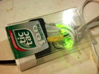
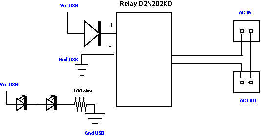
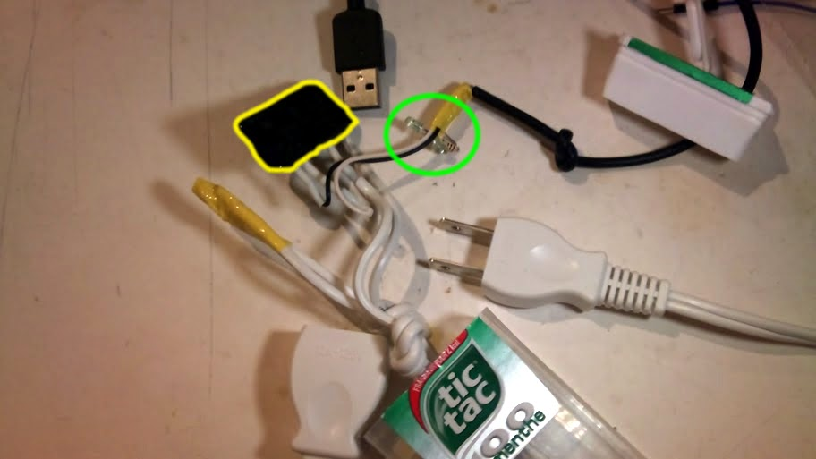

Purpose
When the pc starts up (the one under the TV that plays music with RFID) I'd like the power of the 2.1 speaker system to turn on. Same, when I turn the pc off, I'd like the power of the speaker system to stop. Indeed, there is a manual power switch and lazy as I am, I can't not forget it...20101208: 1h hour of job, it's done. Problem, I picked the wrong wallwart, the one I wanted to command spits 12V/3A which is too much for the 2A rated SSR. I have to go for a bigger relay. Still, this one turns on some nice ambient light thing .
20111122: OMG I just discovered it is a wellknown concept in Denmark! (not my stuff, I mean the idea) There is something great in the kingdom of Denmark ... link
Schema
USB powered, when the PC is on, 5V (max 500 mA) is sourced and turns on a little relay (maybe Solid State Relay). Stick between power and the relay command a diode (avoid short circuits). I initially wanted to put a resistor also but one I measured the current going through it was only 20mA anyway. So I let it like that with the big diode protecting the %20 pin.The 2 leds %20 resistor are here only for the bling-bling. They are not in serial with the relay command, but it forms another loop around the USB power.

Version 1 schema (basically also version 2 since it's quite trivial)
Edit: this schema could use a small 100 ohm resistor before the diode to command the SSD, I never thought at the time to check the current consumption...
Parts

Version 1 : Solid State Relay, max 2A
- One electric cable 1m : 100 JPY
- One usb cable : 100 JPY
- Solid State Relay 240V/2A : 250 JPY
- 1 diode 1N4007, 2 leds, 100 ohm resistor : 100 JPY
Version 2 : Solid State Relay kit from Akizukidenshi , max 25A
- One electric cable 1m : 100 JPY
- One usb cable : 100 JPY
- Solid State Relay kit 100V/20A : 250 JPY
In this version, no protection nothing before the Optocoupler, just plugged to USB. There is a 300 ohm serial resistor, around 10mA will flow to trigger it.
Pictures
Version 1 : Solid State Relay, max 2A
In yellow, the Solid State Relay. In green, 2 green leds %20 a 100 ohm resistor in serial

Everything in the box when the USB is on (yeah yeah bling bling, I know, but I have 100 leds to use so...)